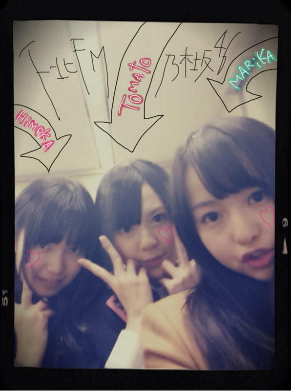
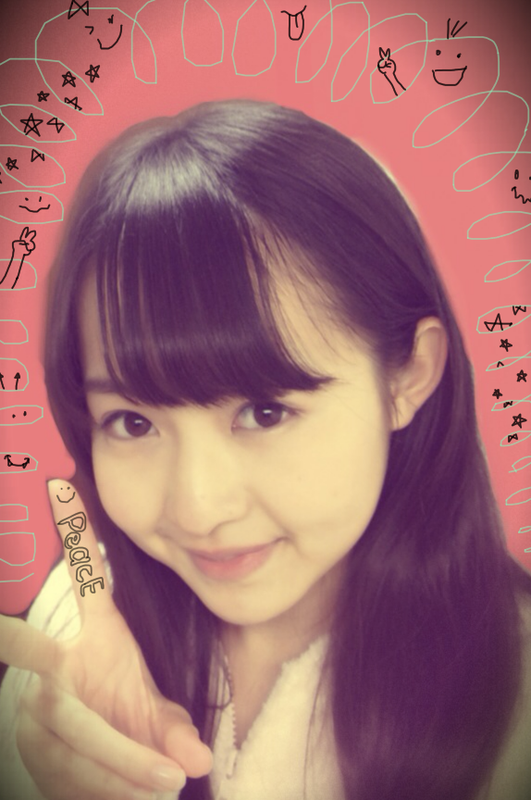

| 2012/01 27 Fri | 61回目*marika |
いつも読んでくださってる方、
初めて読んでくださった方、
コメントしてくださった方、
ありがとうございます!!
みなさんお疲れさまりかです^^
とまと、ひめかお疲れさま*＊。
下北FM無事終了しました ♡

寒い中来てくださったみなさん、
本当にありがとうございました☆
沢山来てくださってて....
沢山の声援、うれしかったです:D♡
最初は緊張してましたが
MCの大蔵さん、とまとやひめかに
緊張をほぐしていただきました^^
いっぱいしゃべれたし、みなさんと
近くでお会いすることができたし、
高まりかでした><うきゃ
画面を通して見てくださった方!!
私からの♡は伝わったかな??てれ
とまととひめかの天然爆発でした笑
かわいくてきゅーんきゅんしてた♡
....えっ。
私はボケてなかったよ?←
テンパってもないよ?
落ち着いてたでしょう??笑
楽しいひとときでした。
また出演できたらいいな＊
...................
・私もぐるぐるカーテン
踊れるようになりたいな*
ポイントは何処ですか??
*****
うわーすごいうれしい♡
サビの部分、すごくかわいいから覚えてほしいな＊
ポイントはつま先をそろえて角度がつく時は
かかとをぴょこぴょこ動かすこと!!
すごくかわいく踊れますよ♪
踊り全部かわいいよね。
笑顔で踊ってほしいなあ^^
・そういえば握手会で
ツノヘアー行ってもいいかな？**
*****
うんうん♡
ぜひ来て~♡
ツノちゃんかわゆいですよね;)
・学校のカーテンでぐるぐるしてますか？
*****
中学の頃、ガールズトークしながら
よくぐるぐるしてたなあ＊
今はカーテンが短くて棚があるから
できないのx(
ぐるぐるしたああぁい!!
・好きな歌手は？
*****
flumpoolさん
GalileoGalileiさん
椎名林檎さん
など♪♪
・ばぶちゃんの冠番組が始まります。
さてどんな番組？
*****
ばぶー←←
のんびりした感じの。
田舎でお手伝い...
世界を旅する..
意外^^?
・今まで一番ハラハラした
ジェットコースターって何？
*****
富士Qのドドンパ!!
すごいスピードだった!!!!
・ベビたん って自分で考えたの？☆
*****
とまとが名付け親なのー笑
・ベビたんはマックとか行った？
ハンバーガー無料券は何枚GETした？
*****
最近行ってない-><
無料券もらえるんですか:O
でも食べたいけど今はがまんしてるの。
・女の子でアイドルを全力で
応援してる子、どお思いますか？
*****
応援してくださるなんて本当に本当に
めっちゃうれしいです♡
女の子....♡
いろんなこと話せるねー><笑
仲良くしたいっ
・スマーフどこまで進んでる？
スヌーピーもやってる？
*****
最近いじってないな><
一からやり直そうかな; ;
・ブログ最後のLOVEは俺個人に宛てた
メッセージだと思ってもいい？
*****
....^^♡
...................

ぴーーーーーーーす
前髪くるりんちょ
前髪整えてもらいました＊
ちょとしたのでもだいぶ印象変わるよね。
＊＊＊
29日 NACK5「i-BAN」
ゆみねぇ、ちはる、私の3人が
出演します!!
頑張るぞっっ
＊＊＊
風邪をひいている方、
調子はどうでしょうか><
しっかり休んでBloG読んで元気になってね☆

LOVE
ベビたん*****bA by marika